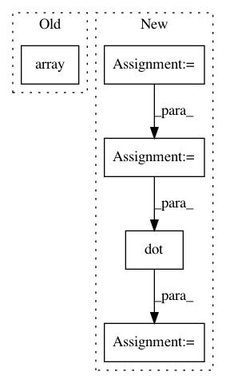

8c271d54da8f609c9b56e9d0ab98d453b3e4f81c,tensorly/metrics/tests/test_entropy.py,,test_vonNeumann_entropy_pure_state_CP,#,22
Before Change
def test_vonNeumann_entropy_pure_state_CP():
mat = parafac(tl.tensor(mat_pure), rank=1, normalize_factors=True)
tl_vne = np.array(vonNeumann_entropy(mat))
assert np.allclose(tl_vne, np.array([0]), rtol=1e-03, atol=1e-03)
def test_vonNeumann_entropy_mixed_state():
tl_vne = np.array(vonNeumann_entropy(mat_mixed))
After Change
tl.testing.assert_array_almost_equal(tl_vne, 0, decimal=3)
def test_vonNeumann_entropy_pure_state_CP():
state = tl.randn((8, 1))
state = state/tl.norm(state)
mat_pure = tl.dot(state, tl.transpose(state))
mat = parafac(mat_pure, rank=1, normalize_factors=True)
tl_vne = cp_vonneumann_entropy(mat)
tl.testing.assert_array_almost_equal(tl_vne, 0, decimal=3)
In pattern: SUPERPATTERN
Frequency: 4
Non-data size: 5
Instances
Project Name: tensorly/tensorly
Commit Name: 8c271d54da8f609c9b56e9d0ab98d453b3e4f81c
Time: 2021-03-08
Author: taylorpatti@g.harvard.edu
File Name: tensorly/metrics/tests/test_entropy.py
Class Name:
Method Name: test_vonNeumann_entropy_pure_state_CP
Project Name: geomstats/geomstats
Commit Name: 6bc1b4730644ae4dba5d931387fe9de8b1140a6c
Time: 2020-05-09
Author: nicolas.guigui@inria.fr
File Name: examples/plot_pole_ladder_s2.py
Class Name:
Method Name: main
Project Name: nipy/dipy
Commit Name: 186ae52fe58fa5f2ed3423e4e18e8638d7c7300e
Time: 2016-09-29
Author: Kesshi.Jordan@ucsf.edu
File Name: dipy/tracking/tests/test_utils.py
Class Name:
Method Name: test_get_flexi_tvis_affine
Project Name: tensorly/tensorly
Commit Name: 8c271d54da8f609c9b56e9d0ab98d453b3e4f81c
Time: 2021-03-08
Author: taylorpatti@g.harvard.edu
File Name: tensorly/metrics/tests/test_entropy.py
Class Name:
Method Name: test_vonNeumann_entropy_pure_state